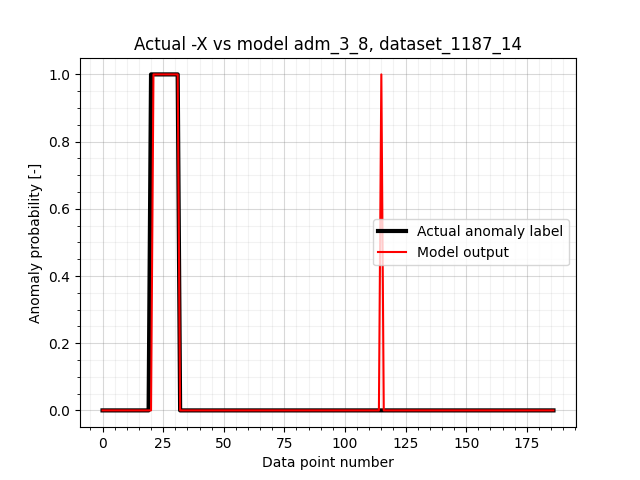
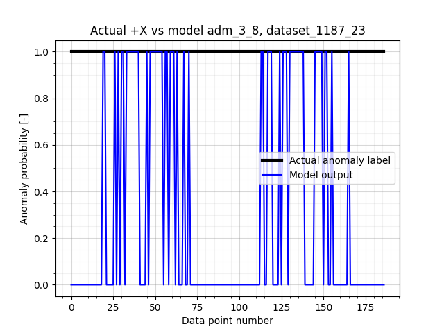

Model type: MLP. Threshold 0.85. Time error +2 min
Model description: 17x96x96x96x4 MLP to detect anomalies on 4 panels based on 4 x 10 temperature msmnts + 4 derivatives + 1 time. Tested on previously unseen data. Trained to detect sensor spikes, const regions, temp shifts and bumps. Removed prediction outputs.
Model data size: 1 [Bytes]
Test results:
Accuracy on NO anomalies (0): 2.0001
Accuracy on ANOMALIES (1): 2.0001
Time per inference: 0.14 [s]
Total test time: 936.144 [s]
recall: 0.8631
precision: 0.9722
F1 score: 0.9144
False alarm rate: 0.0054
Figure 1: model inferences on dataset_1187_0_mod1.png
Figure 2: model inferences on dataset_1187_1_mod1.pngFigure 3: model inferences on dataset_1187_2_mod1.pngFigure 4: model inferences on dataset_1187_3_mod1.pngFigure 5: model inferences on dataset_1187_4_mod1.png
Figure 6: model inferences on dataset_1187_5_mod1.pngFigure 7: model inferences on dataset_1187_6_mod1.pngFigure 8: model inferences on dataset_1187_7_mod1.pngFigure 9: model inferences on dataset_1187_8_mod1.pngFigure 10: model inferences on dataset_1187_9_mod1.pngFigure 11: model inferences on dataset_1187_10_mod1.png
Figure 12: model inferences on dataset_1187_11_mod1.pngFigure 13: model inferences on dataset_1187_12_mod1.png
Figure 14: model inferences on dataset_1187_13_mod1.png

Figure 15: model inferences on dataset_1187_14_mod1.pngFigure 16: model inferences on dataset_1187_15_mod1.png
Figure 17: model inferences on dataset_1187_16_mod1.png
Figure 18: model inferences on dataset_1187_17_mod1.pngFigure 19: model inferences on dataset_1187_18_mod1.pngFigure 20: model inferences on dataset_1187_19_mod1.pngFigure 21: model inferences on dataset_1187_20_mod1.pngFigure 22: model inferences on dataset_1187_21_mod1.png
Figure 23: model inferences on dataset_1187_22_mod1.png

Figure 24: model inferences on dataset_1187_23_mod1.png
Figure 25: model inferences on dataset_1187_24_mod1.pngFigure 26: model inferences on dataset_1187_25_mod1.pngFigure 27: model inferences on dataset_1187_26_mod1.pngFigure 28: model inferences on dataset_1187_27_mod1.png
Figure 29: model inferences on dataset_1187_28_mod1.pngFigure 30: model inferences on dataset_1187_29_mod1.pngFigure 31: model inferences on dataset_1187_30_mod1.png
Figure 32: model inferences on dataset_1187_31_mod1.pngFigure 33: model inferences on dataset_1187_32_mod1.png